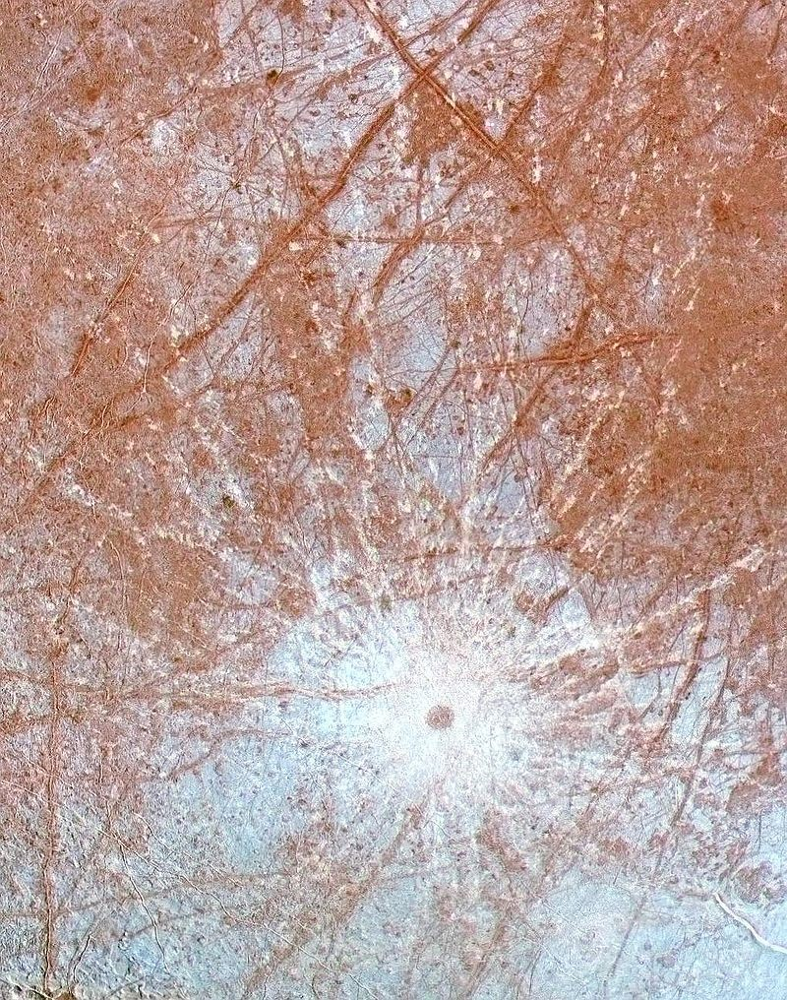
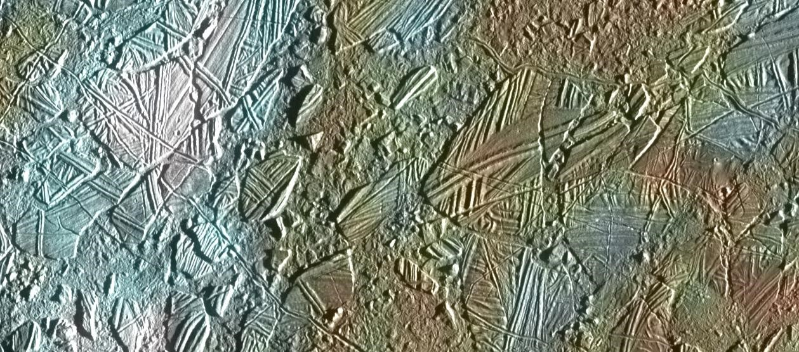

How can we infer the Geological History?
By analyzing Solid State Imaging from
the Galileo spacecraft
-ion dectector (radiation)
-spectrometer (fields)
-SSI

Law of superposition, and different boundaries start to form in the
ice formations upwelling of younger and fresher water that acts a rock cycle in way.

Where the Linae are broken we see amount of variation in age of the ice formations
by analyzing the color distortion of the darker spots vs. the lighter spots on the high resolution images.